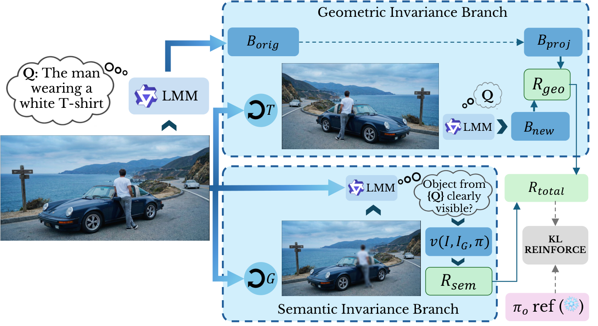
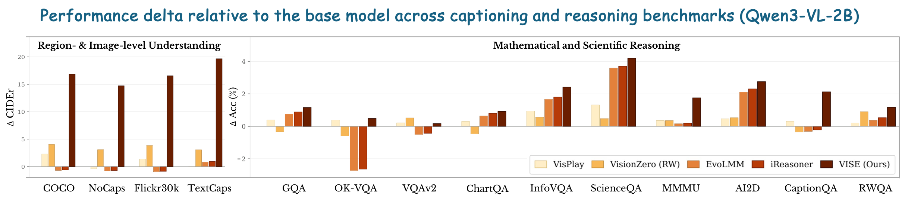
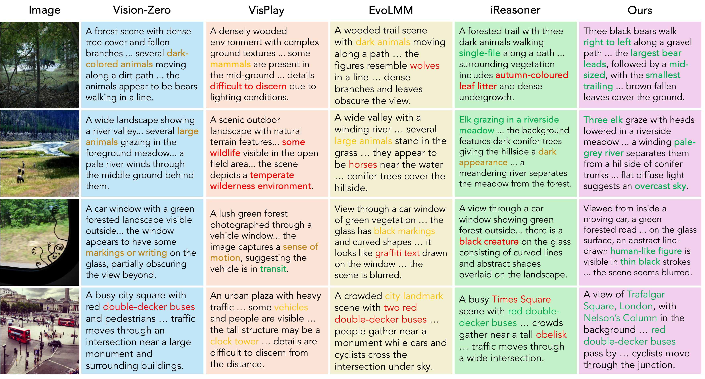
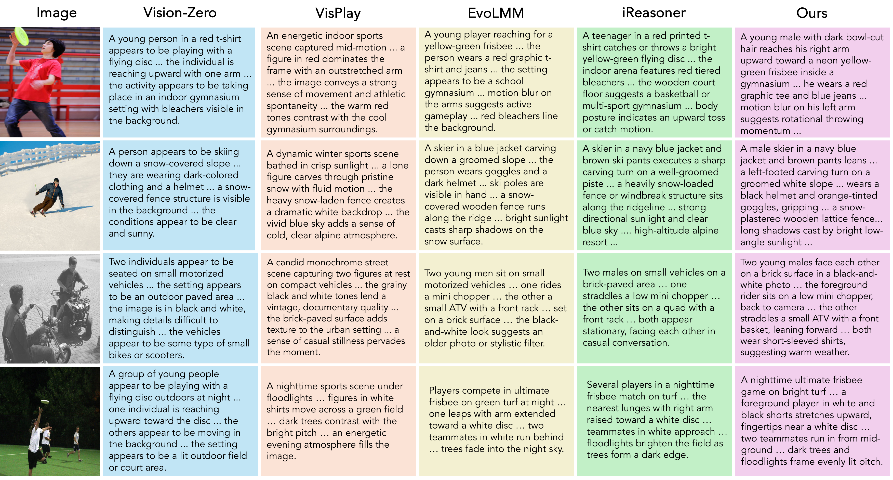
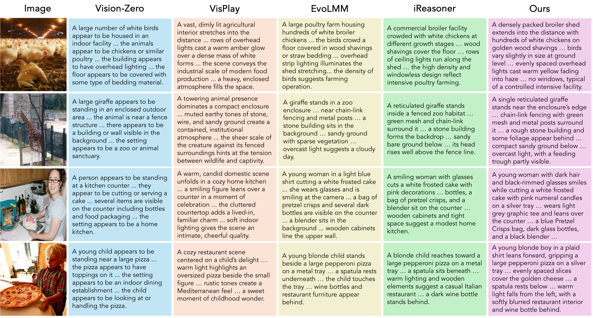
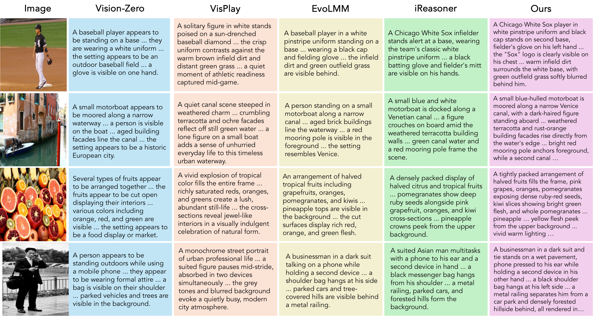
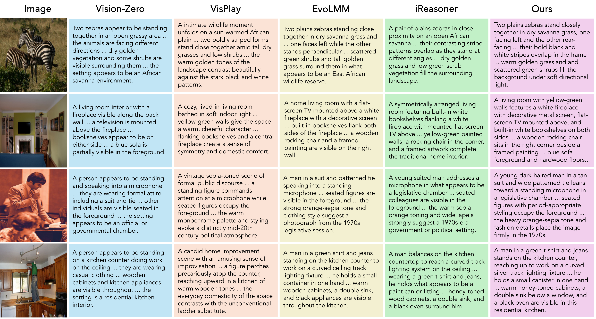
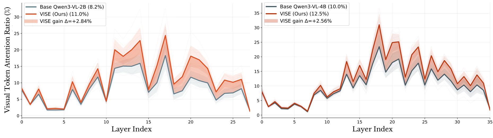
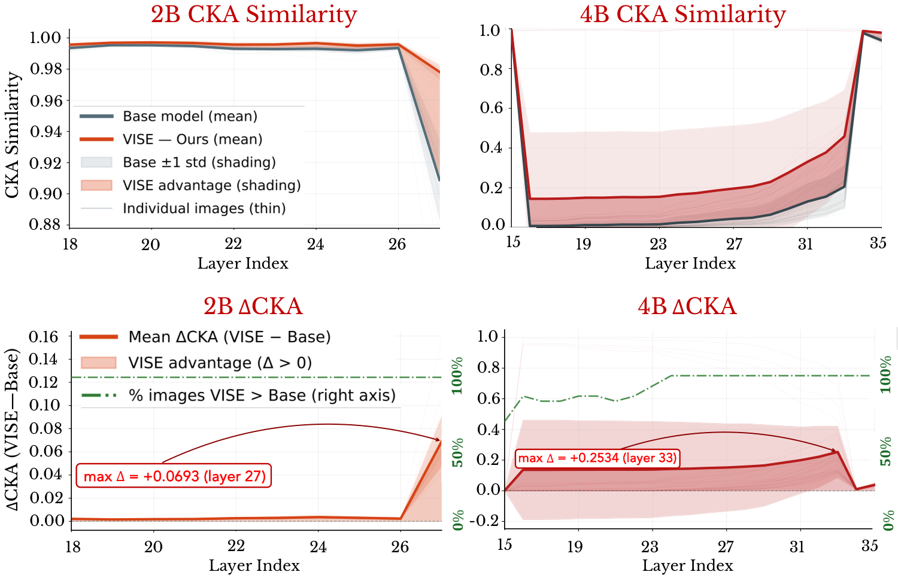

Abstract
Recently, self-evolving large multimodal models (LMMs) have received attention for improving visual reasoning in a purely unsupervised setting. However, multi-role self-play and self-consistency reward schemes in existing self-evolving LMMs optimize answer agreement without ensuring the decoder attends to visual content, relying instead on statistical language priors to produce self-consistent outputs. This leads to a persistent failure mode we term visual under-conditioning, where the decoder relies on language priors rather than the image during generation, manifesting as insufficient attention to visual tokens. As a result, current self-evolving LMMs struggle on vision–language understanding tasks such as image captioning and visual question answering. To address this, we propose VISE (Visual Invariance Self-Evolution), a purely unsupervised self-evolving framework that directly regularizes the model's visual conditioning policy through two complementary invariance-based rewards: a geometric invariance reward that enforces spatial consistency under known transformations, and a semantic invariance reward that penalizes evidence-agnostic generation by requiring the model to recognize the absence of evidence when predicted regions are perturbed. VISE operates within a single model without specialist roles, external reward models, or annotations, and is trained on raw unlabeled images. Experiments on 18 benchmarks demonstrate the efficacy of our approach. Using Qwen3-VL-2B as the base model, VISE achieves gains of +16.85 CIDEr on COCO and +19.66 CIDEr on TextCaps, reduces object hallucination by 5.0 CHAIR-I points, and generalizes across multiple model families and scales.
Method
VISE runs entirely within a single model. Given a raw unlabeled image, the model generates a localization query and predicts a bounding box. Two complementary invariance branches then produce a reward computed entirely from the model's own predictions, which is optimized with KL-regularized REINFORCE against a frozen reference policy.

The Geometric branch transforms the view, re-predicts a box, and rewards agreement with the analytically projected original box. The Semantic branch ghosts the predicted region and rewards the model only if it detects the object before perturbation and not after.
Geometric Invariance Rgeo
A correctly-conditioned model should localize the same object consistently under a known spatial transform (affine, crop, or flip). We project the original box through the transform's matrix and reward overlap with the box predicted on the transformed view.
Semantic Invariance Rsem
If the predicted region is blurred away (“ghosting”), the evidence for the object disappears, so a well-conditioned model should notice. We reward the model only when the object is judged visible before ghosting and not visible after.
Results
VISE improves all 18 benchmarks (captioning, VQA, reasoning, and hallucination) with no task tradeoffs, across four scales (2B/4B/8B/32B) and four backbone families (Qwen3-VL, InternVL3, Gemma-3, Llama-3.2-Vision). Prior consistency-based methods trained on math/science images regress on captioning, while VISE achieves the largest captioning gains and remains competitive on reasoning.

+16.85
COCO CIDEr (2B)
+19.66
TextCaps CIDEr (2B)
−5.00
CHAIR-I hallucination (2B)
+2.84%
visual-token attention (2B)
Results Across Model Scales
Base vs. VISE on Qwen3-VL at three scales. VISE improves every benchmark with no task tradeoffs. For CHAIR (↓), lower is better. All numbers are from the paper.
| Benchmark | Base | VISE |
|---|---|---|
| Image Captioning (CIDEr) | ||
| COCO | 21.54 | 38.39 |
| NoCaps | 19.52 | 34.25 |
| Flickr30k | 26.09 | 42.64 |
| TextCaps | 22.20 | 41.86 |
| Reasoning & VQA (Accuracy) | ||
| ScienceQA | 79.42 | 83.61 |
| MMMU | 38.92 | 40.67 |
| InfoVQA | 69.02 | 71.43 |
| AI2D | 73.67 | 76.42 |
| ChartQA | 79.16 | 80.08 |
| GQA | 58.25 | 59.41 |
| Hallucination | ||
| CHAIR-I ↓ | 13.21 | 8.21 |
| CHAIR-S ↓ | 45.96 | 40.51 |
| POPE | 89.01 | 90.03 |
| Benchmark | Base | VISE |
|---|---|---|
| Image Captioning (CIDEr) | ||
| COCO | 27.35 | 39.65 |
| NoCaps | 22.36 | 34.97 |
| Flickr30k | 31.10 | 37.17 |
| TextCaps | 34.54 | 38.59 |
| Reasoning & VQA (Accuracy) | ||
| ScienceQA | 87.51 | 90.04 |
| MMMU | 45.17 | 48.89 |
| InfoVQA | 77.73 | 81.45 |
| AI2D | 80.10 | 82.16 |
| ChartQA | 83.18 | 84.96 |
| GQA | 60.32 | 61.82 |
| Hallucination | ||
| CHAIR-I ↓ | 12.91 | 11.90 |
| CHAIR-S ↓ | 44.58 | 43.02 |
| POPE | 89.73 | 89.86 |
| Benchmark | Base | VISE |
|---|---|---|
| Image Captioning (CIDEr) | ||
| COCO | 29.01 | 38.49 |
| NoCaps | 24.46 | 34.98 |
| Flickr30k | 34.02 | 38.62 |
| TextCaps | 36.21 | 38.42 |
| Reasoning & VQA (Accuracy) | ||
| ScienceQA | 90.88 | 92.81 |
| MMMU | 50.12 | 52.69 |
| InfoVQA | 81.23 | 82.83 |
| AI2D | 83.31 | 84.10 |
| ChartQA | 84.87 | 85.41 |
| GQA | 61.54 | 62.43 |
| Hallucination | ||
| CHAIR-I ↓ | 11.20 | 10.84 |
| CHAIR-S ↓ | 43.42 | 41.53 |
| POPE | 89.91 | 90.32 |
Qualitative Comparisons

Baselines stay vague or commit to plausible-but-wrong details (“wolves”, “obelisk”); VISE reads the image: three bears in order, a figure on a car window, Trafalgar Square with Nelson's Column.

Image-grounded descriptions vs. prior self-evolving baselines.

VISE attends to specific visible evidence rather than scene-level priors.

Fewer hallucinated objects and more faithful attributes.

Consistent gains across diverse natural scenes.
Why it works: more attention to visual tokens

Generation-time visual attention per decoder layer. VISE-trained models (orange) assign more attention to image tokens across mid-to-late decoder layers (mean +2.84% on 2B, +2.56% on 4B), reflecting the shift from language-prior-driven to image-conditioned decoding.

Per-layer CKA similarity between original and geometrically augmented views. VISE gains are confined to final layers on 2B (peak Δ=+0.069 at layer 27) and span layers 19–33 on 4B (peak Δ=+0.253), localizing where invariance correction takes effect.
BibTeX
@inproceedings{venkatraman2026vise,
title = {Paying More Attention to Visual Tokens in Self-Evolving Large Multimodal Models},
author = {Venkatraman, Shravan and Thawkar, Ritesh and Thawakar, Omkar and
Anwer, Rao Muhammad and Cholakkal, Hisham and Khan, Salman and Khan, Fahad Shahbaz},
booktitle = {European Conference on Computer Vision (ECCV)},
year = {2026}
}